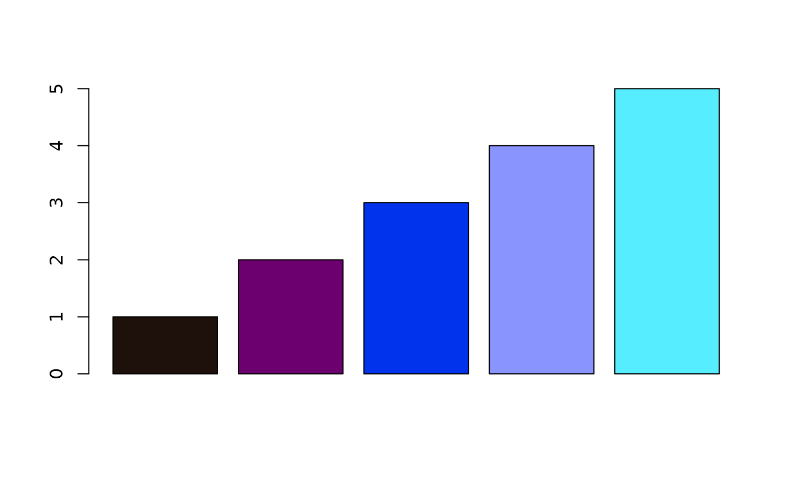
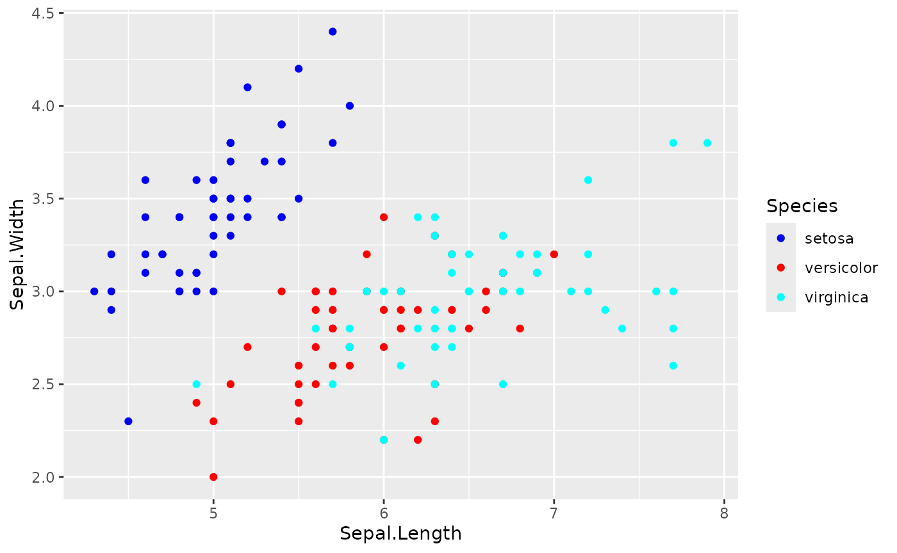
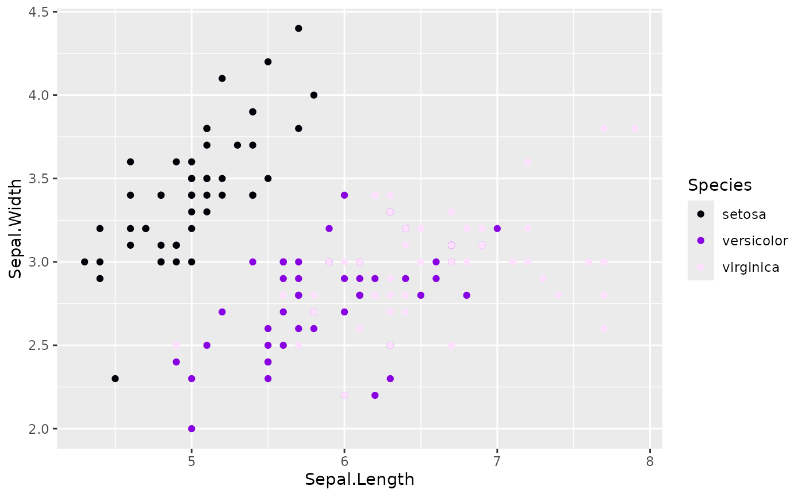

Workflow: Package Developer Integrating huerd
Source:vignettes/package-developer-workflow.Rmd
package-developer-workflow.RmdThe Scenario
You’re developing an R package that includes visualization functions. You want to:
- Generate optimal palettes automatically based on data
- Ensure reproducibility for scientific workflows
- Handle edge cases gracefully
- Provide quality metrics to users
- Minimize dependencies and runtime overhead
This vignette demonstrates how to integrate huerd into your package.
Adding huerd as a Dependency
In your package’s DESCRIPTION:
Imports:
huerdOr for optional functionality:
Suggests:
huerdBasic Integration Pattern
Automatic Palette Generation
library(huerd)
# Function that automatically generates palettes
plot_clusters <- function(data, cluster_column, ...) {
n_clusters <- length(unique(data[[cluster_column]]))
# Generate optimal palette for this number of clusters
palette <- generate_palette(
n = n_clusters,
progress = FALSE # Silent for programmatic use
)
# Use the palette...
list(
n_clusters = n_clusters,
palette = palette
)
}
# Example usage
result <- plot_clusters(iris, "Species")
print(result$palette)
#>
#> -- huerd Color Palette (3 colors) --
#> Colors:
#> [ 1] #7400E6
#> [ 2] #FF0000
#> [ 3] #D8FBFF
#>
#> -- Quality Metrics Summary --
#> * Min. Perceptual Distance (OKLAB): 0.413
#> * Optimizer Performance Ratio : 70.2%
#> * Min. CVD-Safe Distance (OKLAB) : 0.332
#>
#> -- Generation Details --
#> * Optimizer Iterations: 225
#> * Optimizer Status: NLOPT_XTOL_REACHED: Optimization stopped because xtol_rel or xtol_abs (above) was reached.Reproducible Palettes
For scientific workflows, ensure reproducibility:
# Set seed before generation
set.seed(42)
palette1 <- generate_palette(8, progress = FALSE)
# Same seed = same palette
set.seed(42)
palette2 <- generate_palette(8, progress = FALSE)
identical(as.character(palette1), as.character(palette2))
#> [1] TRUEOr use the built-in reproduction:
original <- generate_palette(8, progress = FALSE)
reproduced <- reproduce_palette(original, progress = FALSE)
identical(as.character(original), as.character(reproduced))
#> [1] TRUEAccessing Optimization Metadata
huerd palettes include rich metadata for logging and debugging:
palette <- generate_palette(
n = 8,
return_metrics = TRUE, # Include quality metrics
progress = FALSE
)
# Access optimization details
opt_details <- attr(palette, "optimization_details")
str(opt_details)
#> List of 4
#> $ iterations : int 755
#> $ status_message : chr "NLOPT_XTOL_REACHED: Optimization stopped because xtol_rel or xtol_abs (above) was reached."
#> $ nloptr_status : num 4
#> $ final_objective_value: num -0.127
#> - attr(*, "class")= chr [1:2] "huerd_optimization_details" "list"
# Access quality metrics
metrics <- attr(palette, "metrics")
cat("Minimum distance:", metrics$distances$min, "\n")
#> Minimum distance: 0.1541632
cat("Performance ratio:", metrics$distances$performance_ratio, "\n")
#> Performance ratio: 0.4975199Choosing the Right Optimizer
Different optimizers suit different needs:
# COBYLA (default) - Good balance, deterministic
cobyla_pal <- generate_palette(6, optimizer = "nloptr_cobyla", progress = FALSE)
# SANN - Stochastic, may find better solutions
sann_pal <- generate_palette(6, optimizer = "sann", progress = FALSE)
# L-BFGS - Fast gradient-based, best with smooth objectives
lbfgs_pal <- generate_palette(
6,
optimizer = "nlopt_lbfgs",
weights = c(smooth_repulsion = 1),
progress = FALSE
)
# Compare results
cat("COBYLA min distance:", evaluate_palette(cobyla_pal)$distances$min, "\n")
#> COBYLA min distance: 0.1350284
cat("SANN min distance:", evaluate_palette(sann_pal)$distances$min, "\n")
#> SANN min distance: 0.2143331
cat("L-BFGS min distance:", evaluate_palette(lbfgs_pal)$distances$min, "\n")
#> L-BFGS min distance: 0.04296962Recommendations: - Use nloptr_cobyla
(default) for general use - Use sann when quality is more
important than speed - Use nlopt_lbfgs with
smooth_repulsion for fastest optimization
Handling Edge Cases
Single Color
single <- generate_palette(1, progress = FALSE)
print(single)
#>
#> -- huerd Color Palette (1 color) --
#> Colors:
#> [ 1] #003600
#>
#> -- Quality Metrics Summary --
#> * Min. Perceptual Distance (OKLAB): NA
#> * Optimizer Performance Ratio : 0.0%
#> * Min. CVD-Safe Distance (OKLAB) : NA
#>
#> -- Generation Details --
#> * Optimizer Iterations: 34
#> * Optimizer Status: NLOPT_XTOL_REACHED: Optimization stopped because xtol_rel or xtol_abs (above) was reached.
length(single)
#> [1] 1Empty Palette
empty <- generate_palette(0, progress = FALSE)
print(empty)
#>
#> -- huerd Color Palette (0 colors) --
#> (empty palette)
#>
#> -- Quality Metrics Summary --
#> * Min. Perceptual Distance (OKLAB): NA
#> * Optimizer Performance Ratio : 0.0%
#> * Min. CVD-Safe Distance (OKLAB) : NA
#>
#> -- Generation Details --
#> * Optimizer Iterations: 0
#> * Optimizer Status: All colors fixed
length(empty)
#> [1] 0Large Palettes
# For many colors, consider limiting iterations for speed
large <- generate_palette(
n = 15,
max_iterations = 500, # Faster but potentially lower quality
progress = FALSE
)
print(large)
#>
#> -- huerd Color Palette (15 colors) --
#> Colors:
#> [ 1] #002400
#> [ 2] #390D64
#> [ 3] #004330
#> [ 4] #890000
#> [ 5] #3C36A1
#> [ 6] #0050CD
#> [ 7] #BD0000
#> [ 8] #A900F3
#> [ 9] #917500
#> [10] #FF0000
#> [11] #FF00FF
#> [12] #FF676B
#> [13] #66BAFF
#> [14] #00ED00
#> [15] #00FFDE
#>
#> -- Quality Metrics Summary --
#> * Min. Perceptual Distance (OKLAB): 0.096
#> * Optimizer Performance Ratio : 45.2%
#> * Min. CVD-Safe Distance (OKLAB) : 0.059
#>
#> -- Generation Details --
#> * Optimizer Iterations: 502
#> * Optimizer Status: NLOPT_MAXEVAL_REACHED: Optimization stopped because maxeval (above) was reached.Evaluating External Palettes
Your package might want to compare huerd palettes against user-provided ones:
# Evaluate any vector of hex colors
viridis_colors <- c("#440154", "#3B528B", "#21918C", "#5DC863", "#FDE725")
eval_viridis <- evaluate_palette(viridis_colors)
cat("Viridis (5 colors):\n")
#> Viridis (5 colors):
cat(" Min distance:", round(eval_viridis$distances$min, 3), "\n")
#> Min distance: 0.19
cat(" CVD safety:", round(eval_viridis$cvd_safety$worst_case_min_distance, 3), "\n")
#> CVD safety: 0.142
# Compare with huerd
huerd_colors <- generate_palette(5, progress = FALSE)
eval_huerd <- evaluate_palette(huerd_colors)
cat("\nhuerd (5 colors):\n")
#>
#> huerd (5 colors):
cat(" Min distance:", round(eval_huerd$distances$min, 3), "\n")
#> Min distance: 0.266
cat(" CVD safety:", round(eval_huerd$cvd_safety$worst_case_min_distance, 3), "\n")
#> CVD safety: 0.228Palette Objects as Character Vectors
huerd palettes work seamlessly as character vectors:
palette <- generate_palette(5, progress = FALSE)
# Standard vector operations
length(palette)
#> [1] 5
palette[1:3]
#> [1] "#1E110C" "#6D006F" "#0033EB"
rev(palette)
#> [1] "#55EDFF" "#8A94FF" "#0033EB" "#6D006F" "#1E110C"
paste(palette, collapse = ", ")
#> [1] "#1E110C, #6D006F, #0033EB, #8A94FF, #55EDFF"
# Coercion
as.character(palette)
#> [1] "#1E110C" "#6D006F" "#0033EB" "#8A94FF" "#55EDFF"
# Works with base R graphics
barplot(1:5, col = palette)
Integration with ggplot2
If your package uses ggplot2, huerd provides native scales:
library(ggplot2)
# Automatic palette
ggplot(iris, aes(Sepal.Length, Sepal.Width, color = Species)) +
geom_point() +
scale_color_huerd()
# Pre-generated palette for consistency
my_palette <- generate_palette(3, progress = FALSE)
ggplot(iris, aes(Sepal.Length, Sepal.Width, color = Species)) +
geom_point() +
scale_color_huerd(palette = my_palette)
Conditional huerd Usage
If huerd is in Suggests, check for availability:
my_plot_function <- function(data, ...) {
n_groups <- length(unique(data$group))
if (requireNamespace("huerd", quietly = TRUE)) {
palette <- huerd::generate_palette(n_groups, progress = FALSE)
} else {
# Fallback to default colors
palette <- grDevices::hcl.colors(n_groups, "Set2")
}
# Use palette...
}Performance Considerations
# Benchmark different configurations
library(huerd)
# Fast generation (exploration)
# Expected runtime: ~0.1-0.3 seconds (low iterations for quick exploration)
system.time({
fast <- generate_palette(8, max_iterations = 100, progress = FALSE)
})
#> user system elapsed
#> 0.134 0.000 0.134
# Default generation
# Expected runtime: ~0.5-2.0 seconds (balanced iteration count for good quality)
system.time({
default <- generate_palette(8, progress = FALSE)
})
#> user system elapsed
#> 0.943 0.000 0.943
# High quality generation
# Expected runtime: ~2.0-8.0 seconds (high iterations for maximum quality)
system.time({
quality <- generate_palette(8, max_iterations = 3000, progress = FALSE)
})
#> user system elapsed
#> 0.534 0.000 0.535For performance-critical applications:
- Cache palettes - Generate once, reuse across plots
-
Use
max_iterations- Lower values for faster (but potentially lower quality) results -
Use
nlopt_lbfgs- Fastest optimizer for smooth objectives
Summary
For package developers, huerd provides:
-
Programmatic API -
progress = FALSEfor silent operation -
Reproducibility - Seed control and
reproduce_palette() -
Rich metadata -
attr(palette, "optimization_details")for logging - Multiple optimizers - Choose speed vs. quality
- Edge case handling - Works with n=0, n=1, large n
- Standard R integration - Works as character vector
-
ggplot2 scales - Native
scale_color_huerd()integration -
External evaluation -
evaluate_palette()works on any colors
This makes huerd suitable for both interactive use and integration into automated pipelines.